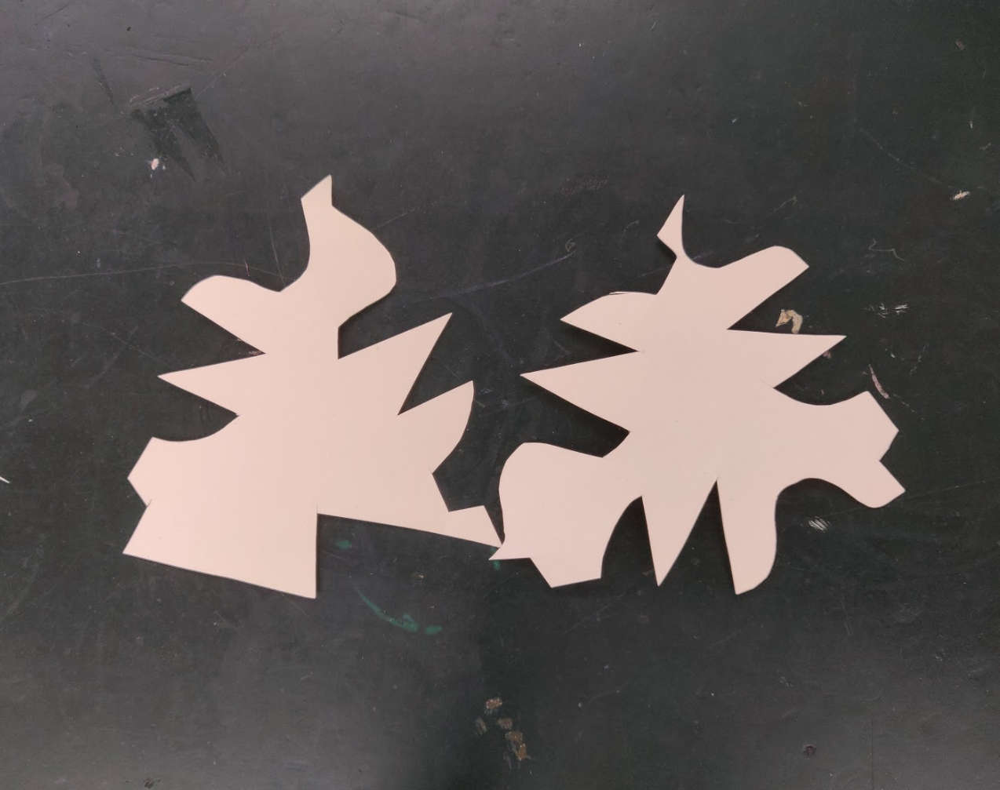
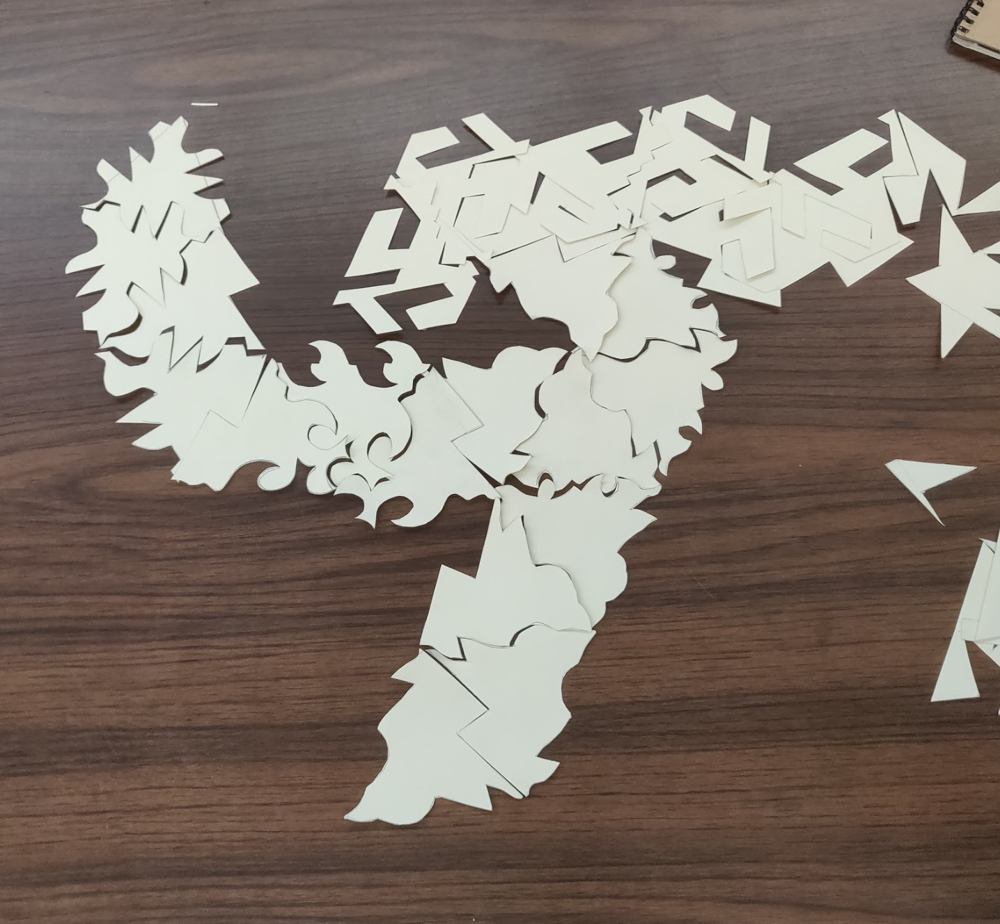
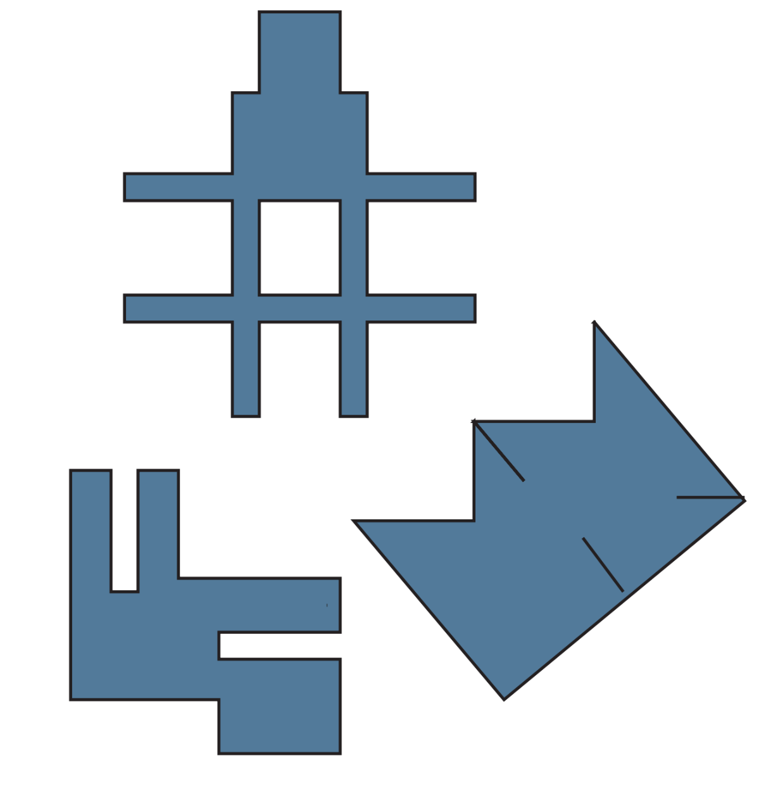
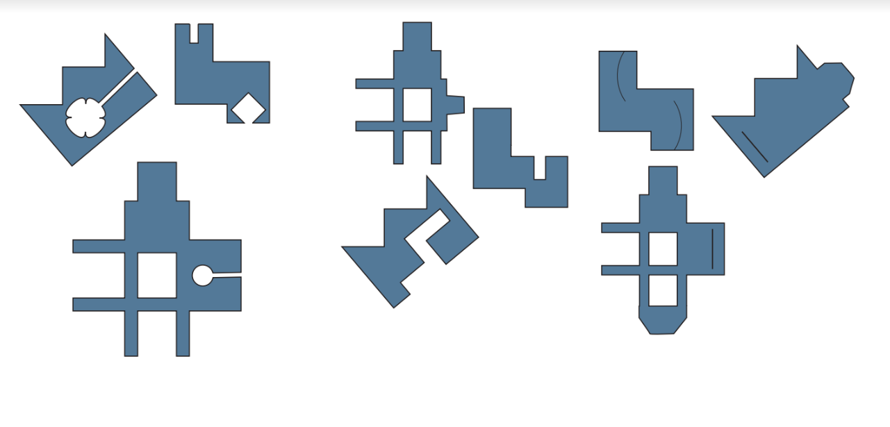
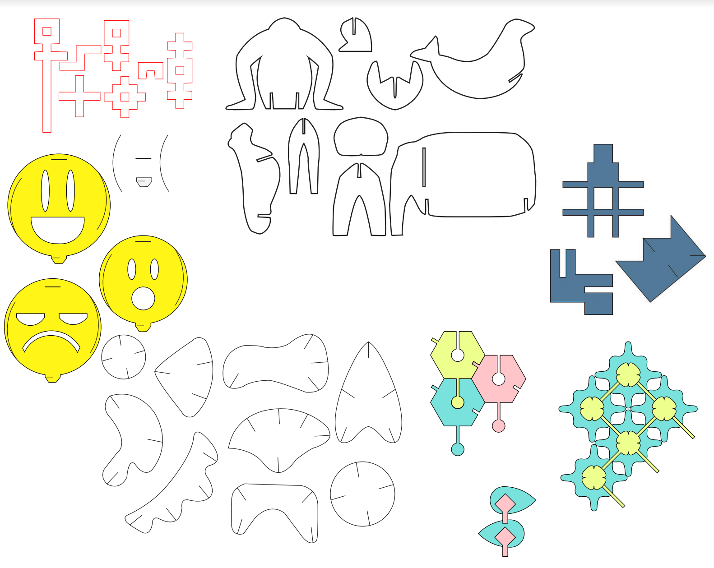
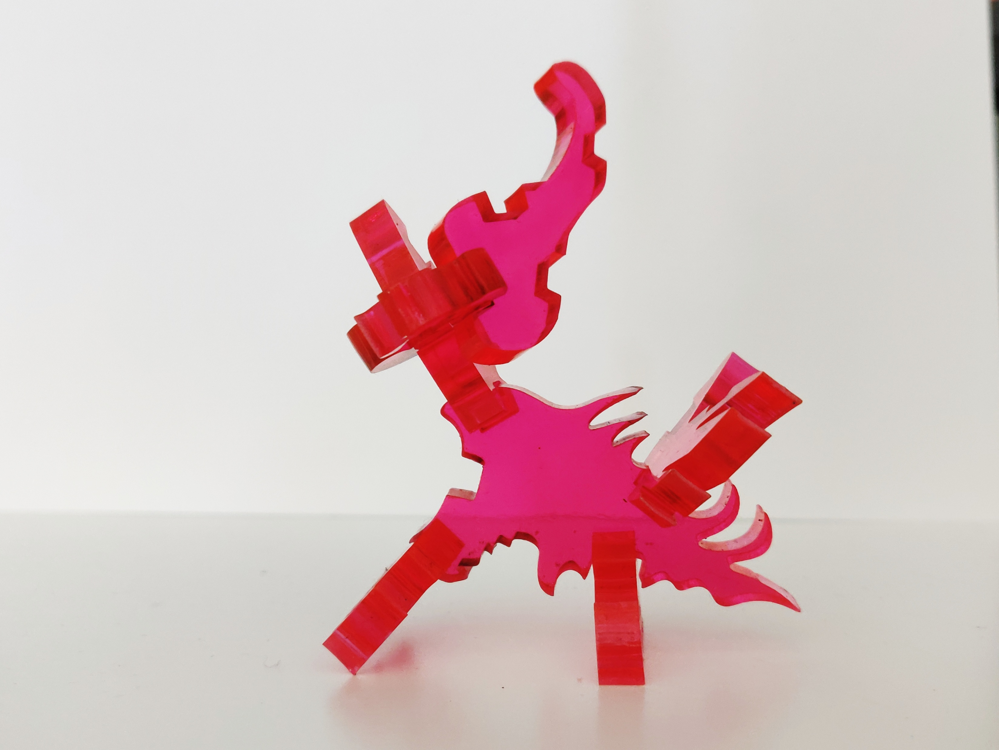
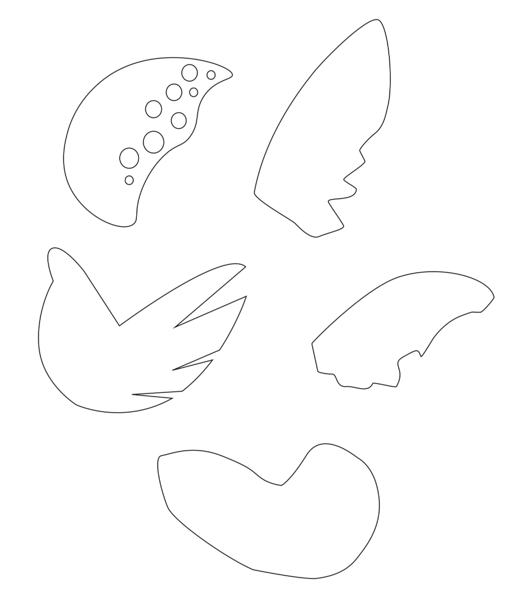

Phase 1: Tessle
In phase 1, we experimented with tesselating shapes from paper cut outs. Everyone had to make their own shapes and another design that tessellates with others’ in the group. I went with a triangular pattern for my own design and cutting in chunks. The group decided to do a cut-in fit for our shapes. It was quite challenging because we would mix up sides on where to cut-in and everyone’s shapes looked similar to each other. Eventually, we did fit it together into a ninja star looking form.
My design

With Group

Phase 2
This phase everyone had to make their own design using a connective system. Our theme was a mix of abstract geometric shapes and fun characters. My set was very geometric and meant to slot into each other by slits in paper or acrylic. Everyone decided on fasteners, notches, and jigsaw style connections.
My design

With Group

Total Designs of everyone

Final Set
In the final step of this project, we created a construction set to build abstract monster figures. The figures can be made with tails, heads, wings, bodies, and limbs. For the anatomy, it is encouraged to use each of one body part. Problems that we did come across was making the mistake of buying 0.25 inch acrylic sheets. The thick sheets took much longer to cut which made us scramble for more laser cut times. The laser times were generally filled up and it took us 2 sessions to cut 75% of the pieces. Overall, the thick acrylic made it look better aesthetically as a whole set of time constraints weren’t a factor.



Design Set
I was responsible for designing the wings. At first, I made them resemble wings of animals like you would see on birds and insects. After some feedback, I altered them to be more abstract where they could be wings and other parts.
Below are production images of the laser cut pieces as well as some monster figures that I put together and you can view the schema.
Schema
My Design

Video
Also Kohl made this cool promo video
Contributions
- Designed the wings in the set
- Help check and sign up for laser cutting times
- Help pay for the acrylic cost
- Stored the acrylic sheets in my locker
- Take documentation photos of finished figures and video clips